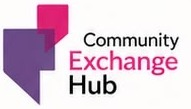
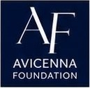
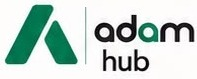

Our three pillars
Tap to discover more
Community Exchange
Informed voices. Meaningful dialogue.
Stronger connections.
Community Exchange
Informed voices. Meaningful dialogue.
Stronger connections.

Avicenna Foundation
Developing leaders rooted in identity,
guided by purpose and service.
Avicenna Foundation
Developing leaders rooted in identity,
guided by purpose and service.

Adam Hub
A place to meet, collaborate
and turn ideas into action.
Adam Hub
A place to meet, collaborate
and turn ideas into action.
Proudly rooted in the Muslim community, working to make a positive contribution to Britain and wider society.
Your connection starts here.
Follow the people, conversations and opportunities shaping our community.
STAY CONNECTED
Adam Foundation
on WhatsApp
News, events and opportunities from the Foundation.
Join our WhatsApp channel